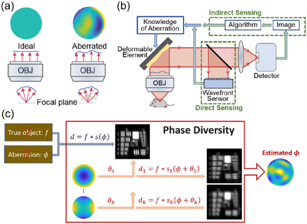
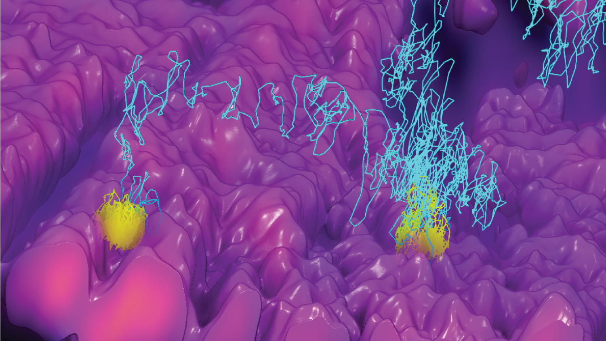
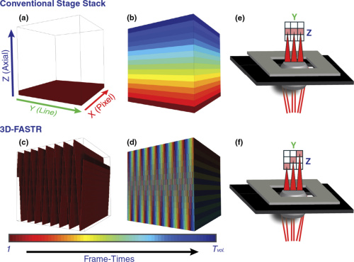
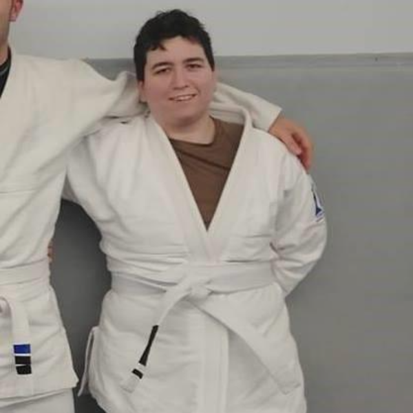
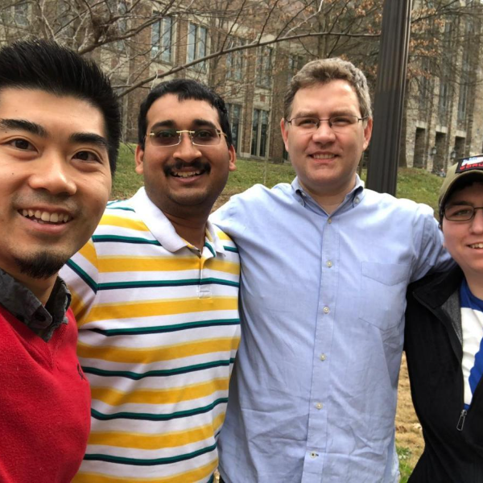
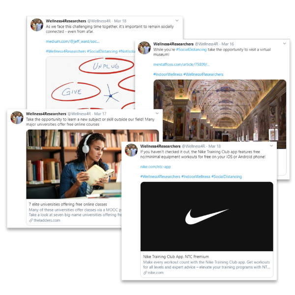
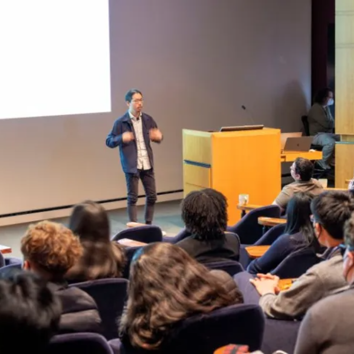

Smart microscopy
Planes can fly themselves and land, why not microscopes? I am obsessed with UX and the idea that the microscopes I build should be so easy to operate that anyone can use them.
Optical physicist and instrument builder developing new fluorescence microscopes and computational methods for biological imaging — adaptive optics, high-speed 3D particle tracking, and rapid point-scan systems that extract quantitative insight from living samples.

I design and build optical systems from an empty table, then pair them with computational methods so biologists can ask questions that existing microscopes can't answer.
I am a Postdoctoral Scientist at HHMI Janelia Research Campus, developing rapid and robust image-based wavefront sensing techniques for adaptive optics. I completed my Ph.D. in Chemistry with Kevin Welsher at Duke University, where I developed 3D-TrIm — a microscope that tracks single viruses using real-time adaptive feedback at 1000 localizations per second while simultaneously imaging their surrounding 3D cellular environment.
I don't just build optics: I endeavor to push the envelope of "smart microscopy" by developing smart control systems using an automation-first mindset. My goal as a tool-builder is to develop easy-to-use microscopes that become broadly usable and accessible tools for biology.
I'm building toward a lab that develops microscopy methods capable of intelligent decision-making and systems-level biology.
Motifs that guide my developments:
Planes can fly themselves and land, why not microscopes? I am obsessed with UX and the idea that the microscopes I build should be so easy to operate that anyone can use them.
Building acquisition, control, and analysis pipelines that adapt and automate closes the loop between what the microscope sees and what it does next. An automation-first mindset, from the optical table to the dataset.
Treating the optical system and the software as one design problem. Co-designing the imaging system and its reconstruction lets us extract more information per photon — and see what conventional hardware alone cannot.
The best instrument is the one other people can actually use. I care about turning a one-off optical demo into a method biologists reach for — robust, documented, and broadly compatible across modalities.
A sampling of my contributions to microscopy

Image-based adaptive optics method for fluorescence microscopy adapted from astronomy. A rapid, modality-agnostic approach that recovers the wavefront directly from phase-diverse image sets.

Simultaneous real-time 3D tracking of single viruses with co-registered volumetric imaging of the surrounding cellular environment. Captured the earliest moments of virus–cell interaction at 1000 localizations/sec.

Tesselating 3D point-scan patterns optimize sparse sampling that increases the rate of point-scan volumetric imaging and enable simultaneous imaging with active-feedback tracking systems.
Peer-reviewed papers, preprints, and proceedings. Google Scholar →
Lin Y, Lu X, Exell J, Lin H, Johnson C, Welsher KD.
bioRxiv · preprint · 2026
Johnson C, Schneider MC, Christensen R, Li X, Guo M, La Rivière P, Shroff H.
Proc. SPIE 13860 · Adaptive Optics & Wavefront Control for Biological Systems XII · 2026
Schneider MC, Johnson C, Allier C, Heinrich L, Adjavon D, Husic J, La Rivière P, Saalfeld S, Shroff H.
arXiv · preprint · 10.48550/arXiv.2504.14157
Johnson C, Guo M, Schneider MC, Su Y, Khuon S, Reiser N, Wu Y, La Rivière P, Shroff H.
Optica · 10.1364/OPTICA.518559
Johnson C, Exell J, Aguilar J, Welsher K.
Nature Methods 19, 1642–1652 · 10.1038/s41592-022-01672-3
Johnson C, Exell J, Kuo J, Welsher K.
Optics Express 27, 36241–36258 · 10.1364/OE.27.036241
Hou S, Johnson C, Welsher K.
Molecules 24(15), 2826 · 10.3390/molecules24152826
Johnson C, Welsher K.
Frontiers in Optics / Laser Science, JTu4A.101 · 10.1364/FIO.2019.JTu4A.101
McKim M, Buxton A, Johnson C, Metz A, Sheardy RD.
J. Phys. Chem. B 120(31), 7652–7661 · 10.1021/acs.jpcb.6b04561
Selected invited and conference talks. Full record in the CV.
Writing, conversations, and the ideas that shape how I work as a scientist, scholar, and leader.
What Brazilian jiu-jitsu taught me about resilience, problem-solving, and showing up to hard things — and how that carries into the lab.
Read ↗
On leading diverse teams when the ground is shifting — what holds a group together, and the leader's role in keeping it whole.
Read ↗
Building a graduate-student wellness campaign — and what it taught me about service, organizing, and leading from where you stand.
Read ↗
From a fourth year undergraduate with no major to designing state-of-the-art microscopes at Janelia — a conversation about resilience, facing challenges head-on, and betting on yourself to succeed against all odds.
Listen ↗Introducing the next generation of scientists to microscopy and adaptive optics during their visit to Janelia Research Campus.
Read ↗
Invited to speak at the National Center for Science & Civic Engagement on connecting undergraduate science education with community impact.
Details ↗Reach me directly, or follow my work.